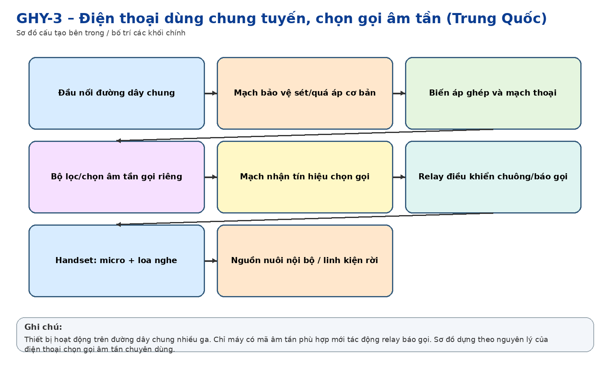
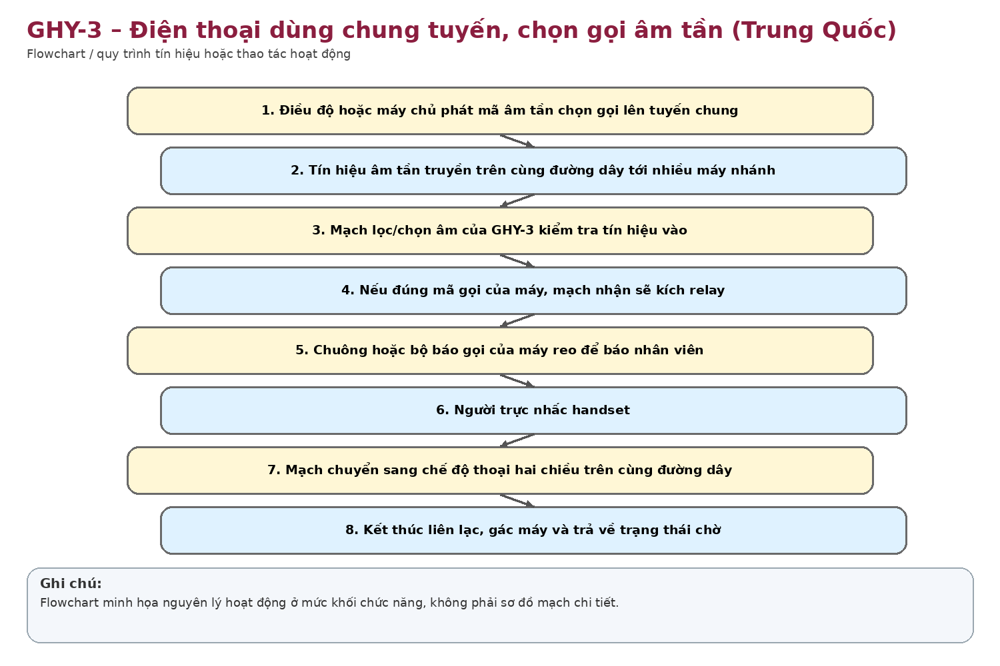

Nhận dạng & niên đại
Công dụng
Công dụng chung
Cho phép nhiều máy cùng mắc trên một đường dây thoại nhưng trung tâm có thể chọn gọi đúng máy cần liên lạc bằng mã/tổ hợp âm tần.
Trong thông tin tín hiệu đường sắt
Rất phù hợp mạng điện thoại điều độ đường sắt: nhiều ga/trạm cùng chung đôi dây dọc tuyến, điều độ viên phát mã âm tần để chỉ máy tại ga được gọi báo chuông.
Phạm vi làm việc
Ưu điểm là tiết kiệm đôi dây trên tuyến dài, cho phép nhiều ga chung một mạch nhưng vẫn chọn gọi riêng từng vị trí.
Cấu tạo bên trong

Tổ hợp nghe nói; mạch ghép đường dây; loa/chuông báo; bộ lọc/chọn tần âm thanh; mạch phát hiện tín hiệu; relay chọn gọi; phím gọi/điều khiển; linh kiện transistor/analog.
Cách thức hoạt động

Trung tâm phát tín hiệu chọn gọi gồm một hoặc nhiều tần số âm thanh. Mỗi máy nhánh được đặt mã/bộ lọc tương ứng. Khi nhận đúng tổ hợp, mạch lọc và detector kích relay, tạo báo gọi. Sau khi nhấc máy, thoại được truyền trên cùng tuyến chung.
Thông số kỹ thuật
Thông số chính
Chưa có tài liệu model-specific để chốt tần số, điện áp và trở kháng. Nhãn máy xác nhận GHY-3 và chức năng 音选共线电话机.
Nguồn điện / cấp nguồn
Khả năng được cấp từ tuyến/nguồn điều độ hoặc nguồn cục bộ tùy hệ thống; cần sơ đồ máy để xác định.
Giá trị lịch sử – trưng bày
Hiện vật rất điển hình cho công nghệ điều độ analog chọn gọi âm tần – cầu nối giữa điện thoại magneto/pulse đời cũ và hệ thống điều độ số về sau.
Tình trạng quan sát
Vỏ nhựa vàng/kem, handset còn đủ; nhãn tiếng Trung và model đọc rõ. Có dấu lão hóa nhựa và sử dụng.
Ảnh hiện vật
Xác minh thêm & nguồn tham khảo
Căn cứ mốc sử dụng tại Việt Nam/ĐSVN:
Ước
tính theo công nghệ và xuất xứ; chưa có chứng từ nhập/đưa vào sử
dụng.